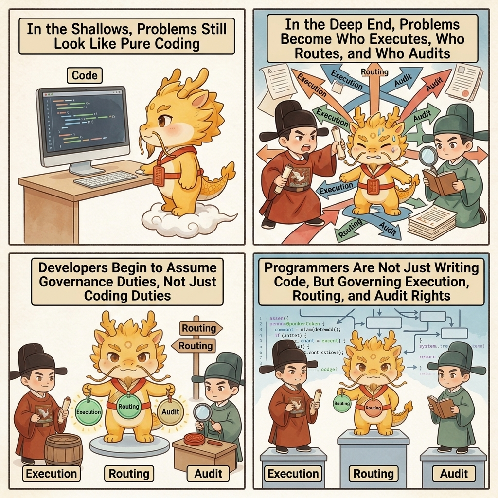
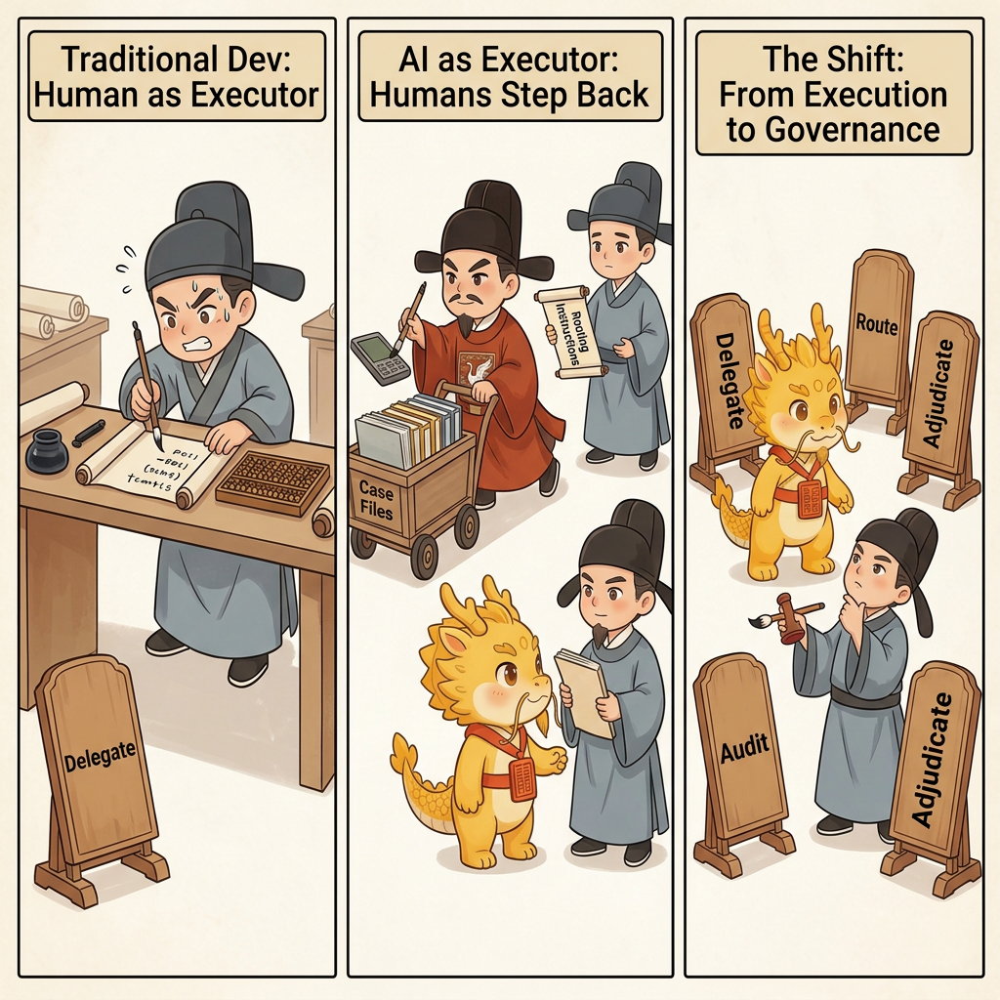

Why
Why AI Coding Blurs CS and Management

Why AI Coding Has Already Blurred the Boundary Between CS and Management
Table of Contents
- What This Page Solves
- Traditional Programming Mainly Places Humans in the Executor Role
- AI Coding Changes Not Tool Power, but Human Position
- The Deeper Change: High Throughput Pushes the System Toward a Partly White-Box, Partly Black-Box State
- Why Management Gets Forced Into the Scene
- This Does Not Mean Developers Become Testers, and It Does Not Mean CS Exits
- This Does Not Mean CS Exits; It Means CS No Longer Monopolizes All Problems
- Cyber-Ming-Protocol Takes Shape in This Gap
- The Boundary in One Sentence
- Related Pages
What This Page Solves
Cyber-Ming-Protocol keeps using words such as sovereignty, audit, judgment, balance, and renewal. Many people's first reaction is: are you making programming sound too political, too managerial? Some take it a step further and hear a disguised job swap: developers are no longer developing, they are just becoming testers, validators, or managers.
This page addresses exactly that misunderstanding.
The issue is not that someone subjectively enjoys talking about programming as governance. The issue is that AI coding has already changed the position developers occupy. Once the executor can read code, run commands, produce artifacts, report results, and even collaborate with other executors, developers are no longer facing only traditional programming problems. They are also facing questions such as:
- How tasks are delegated
- How the process is routed
- Who audits the result
- Who judges completion
- Who takes over after failure
Those questions still rest on CS, but they already have strong governance characteristics of their own. That is why AI coding, once it reaches deep water, naturally starts to blur the boundary between CS and management.
Traditional Programming Mainly Places Humans in the Executor Role
Before strong agents entered the scene, no matter how programmers layered systems or collaborated with each other, the core work was still mostly executed by hand:
- You wrote the code yourself
- You ran the tests yourself
- You fixed the errors yourself
- You remembered why the changes were made yourself
Of course teams still had review, process, division of labor, and project management, but those mostly sat around the outside as organizational structure. For an individual developer, the first scene was still: I am writing, I am changing, I am understanding.
Under that condition, many problems were still mainly CS problems:
- Whether the algorithm is correct
- Whether the architecture makes sense
- Whether the data flow is stable
- Whether edge cases are covered
Management certainly existed, but it had not yet attached itself to every line of code at the point of execution.
AI Coding Changes Not Tool Power, but Human Position
What AI coding really changes is not simply that autocomplete got stronger. It is that, for the first time in ordinary development, a continuously delegable digital executor has entered the scene.

Once the executor can:
- Break down tasks by itself
- Modify code across many files by itself
- Run commands and tests by itself
- Summarize the results by itself
- Explore in parallel with other agents
the developer's position stops being only that of a coder and starts looking more like this:
- Delegator
- Router
- Auditor
- Judge
- Takeover authority
At that moment, the center of the problem shifts. What you have to handle is no longer only whether the code is correct. It also includes:
- Who is responsible for execution and who is responsible for doubt
- What materials are allowed into the next round of execution
- What counts as a completion fact and what is only a summary
- How another window takes over after the current one decays
- How to prevent private backchannels, cross-contamination, and resonance distortion when multiple executors work at once
Those are no longer only problems of syntax, algorithms, and architecture. They still stand on a CS foundation, but governance problems have forced their way in.
The Deeper Change: High Throughput Pushes the System Toward a Partly White-Box, Partly Black-Box State
If the story were only that humans moved from executor to judge, it still would not go deep enough. The deeper change is that AI coding widens the gap between the speed at which code is produced and the speed at which humans can reopen that code as white-box understanding.
In traditional development, the person writing the code usually also paid most of the understanding cost. Even with incomplete comments, distorted naming, or the usual problem of forgetting what you wrote a few weeks later, that burden was still roughly constrained by human output speed. Once the executor enters the scene, the balance changes:
- It can generate and modify code at high speed
- It can run, report, and revise in very short loops
- It can advance across many files, modules, and chains in a short time
Human understanding and review speed do not grow in parallel. So one reality becomes harder and harder to avoid: demanding that developers restore every line of AI output into full white-box understanding is often not economically sustainable. That does not automatically make the system bad, but real collaboration starts sliding toward a more common intermediate state:
Partly white-box, partly black-box.
That means:
- Some links must be inspected as white-box
- Some links can only be spot-checked
- Some results are verified by evidence first, and only then judged for whether deeper understanding is worth the cost
This is not decadence, and it is not technical laziness. It is the realistic compromise that appears once human cognition cost and AI execution speed become unbalanced under high throughput.
Why Management Gets Forced Into the Scene
Management is not being imported here as decorative theory or as a way to sound profound. It gets dragged in because, once the system contains an executor that cannot be kept continuously and cheaply visible as full white-box, delegation, routing, audit, spot-checking, takeover, and upgrade mechanisms become necessary conditions for keeping the overall system controllable.
In other words, management enters not because technology leaves, but because local execution inevitably acquires black-box properties while the whole system still has to answer for results.
First, Execution Rights and Judgment Rights Split Apart
In the past, the person who wrote the code was often also the person who validated it. That is no longer naturally true. The executor can produce results by itself, but it cannot be trusted with the power to declare completion.
As soon as those two powers stop being separated, pseudo-completion appears very quickly. What the executor is best at is not always doing the work correctly. It is often packaging "close enough" as "already done." That is why institutionalized audit and judgment have to appear inside the development process.

Second, Information Routing Itself Becomes Governance Action
In traditional development, copying a log, forwarding a diff, or assembling context was often treated as low-value support work. In AI coding, those actions become governance in the strict sense. What you send to whom, in what order, with what included materials, and with what noise removed directly determines the world the executor and auditor get to see.
Human copy-paste may look clumsy, but it is exactly how the physical routing right is held.
Third, Takeover and Succession Become Everyday Problems
AI windows decay. They forget. They drift. The executor you are using today and the executor you are using tomorrow may not share the same context. So the question of how to take over an old project, an old window, or an old state stops being only a team handover problem. It becomes a governance problem that even a solo developer will face repeatedly.
At that point, what you need is no longer a clever one-shot prompt. You need chronicles, summaries, skill files, restart protocols, and evidence chains.
Fourth, Accountability Expands from Humans to Digital Executors
In traditional management, accountability usually lands on humans. After AI coding, a new object of accountability appears: the executor itself.
You now need to ask:
- Did it skip steps
- Did it substitute a different goal
- Did it treat simulation as real execution
- Did it claim completion without physical evidence
That kind of accountability is not literary rhetoric. It is daily reality in deep water.
This Does Not Mean Developers Become Testers, and It Does Not Mean CS Exits
The easiest follow-on misunderstanding is to read all of this as: developers are no longer developers, they have turned into testers, validators, or review staff. That is also wrong.
Developers have not been demoted to QA. If anything, digital executors force them to carry two kinds of responsibility at once:
- Engineering judgment
- Governance judgment
They still need to understand the code, the architecture, the dependencies, the permissions, the error chains, and the places that will later become refactoring handles. At the same time, they now also have to decide:
- Which parts can continue to be delegated
- Which parts must be forced back into white-box understanding
- Which results are only surface completion
- Which problems must be pulled back into direct human control immediately
So the right statement is not that development and testing have merged. It is this:
The same developer, in AI coding, now carries both the role of technical judge and the role of governance center.

This Does Not Mean CS Exits; It Means CS No Longer Monopolizes All Problems
To make this point precise: management entering AI coding does not mean CS has become invalid, and it certainly does not mean programming has been reduced to simple process management.
Without a CS foundation, you cannot judge:
- Whether an execution chain has gone slack
- Whether an audit opinion has actually found the real problem
- Whether an external system error points to permissions, data, or structure
- Whether a commit truly preserves a useful refactoring handle for the future
So the right statement is not that programming has changed from a technical problem into a management problem. It is this:
In deep-water AI coding, technical problems and governance problems become entangled. Neither side monopolizes the whole.
CS still determines whether you can truly understand the system. Management determines whether you can maintain order inside a multi-executor, multi-window, multi-round, partly black-box reality.
Cyber-Ming-Protocol Takes Shape in This Gap
The underlying judgment of Cyber-Ming-Protocol is not that management should replace programming. It is that, once AI enters the executor role, developers must carry both technical correctness and governance correctness at the same time. And once high-throughput execution makes full white-box understanding expensive, humans must learn to preserve sovereignty inside local black-box reality.
That is why the protocol emphasizes:
- Separation between executor and auditor
- Human retention of the cross-system physical routing right
- An Atomic Execution Contract before execution
- Git chronicles as an index of historical truth
- White-box reconciliation as the basis for completion facts
- Renewal, takeover, and debt repayment after window decay
Those mechanisms can look like "more process," but what they really do is make governance problems explicit that were already present and long hidden by the black-box school.
The black-box school's problem is not that it has no need for management. Its problem is that it hides those needs inside the aftermath cost:
- First let the executor run freely
- Then make humans clean up the mess afterward
- Finally treat cognitive debt, mainline pollution, and refactoring blood loss as if they were merely the user's own problem
Cyber-Ming-Protocol does the opposite. It acknowledges that governance problems are unavoidable, then rewrites them from hidden cost into explicit institution. Governance is introduced not to defend AI, but to ensure that when the system partially decays, when results distort, or when context breaks, humans still retain the power to pull control back, rebuild order, and take over the whole.
The Boundary in One Sentence
AI coding blurs the boundary between CS and management not because everyone suddenly likes talking about governance, but because development now contains a digital executor that can be delegated continuously, distorted continuously, and allowed to pass the buck continuously, while high-throughput execution drives up the cost of re-seeing everything clearly.
Once that happens, programming is no longer only about how to write. It also becomes about how to govern, how to audit, how to take over, and how to preserve truth.
This is not a betrayal of technology. It is technology, under deep-water conditions, being forced by reality into a more complete form:
Humans must continue to preserve global sovereignty inside local black-box reality.